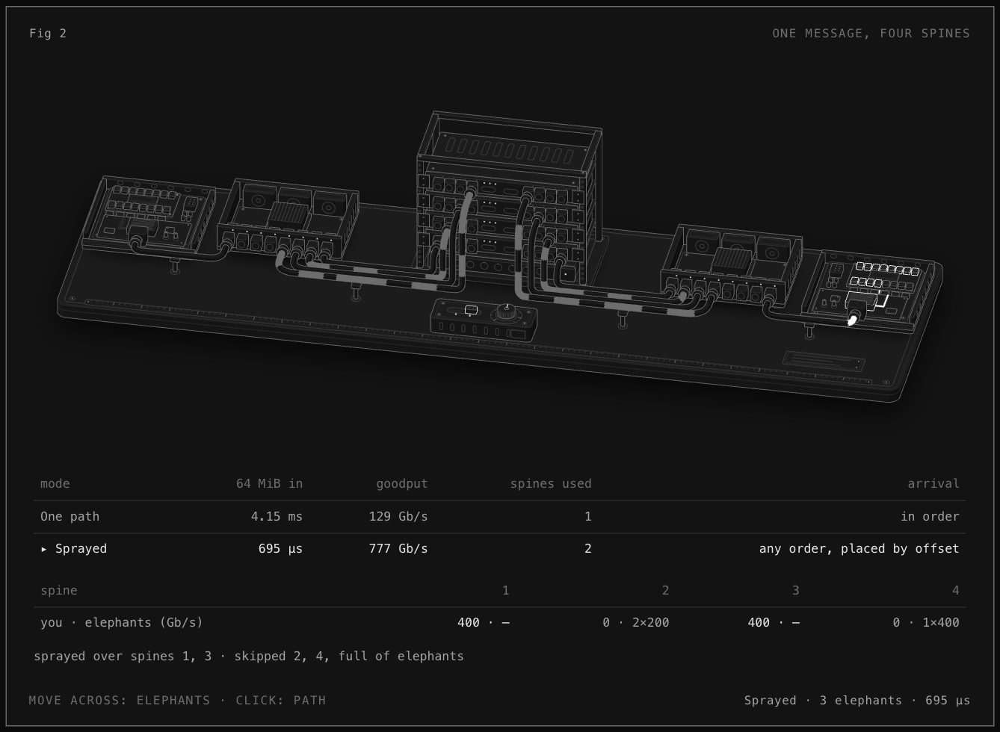
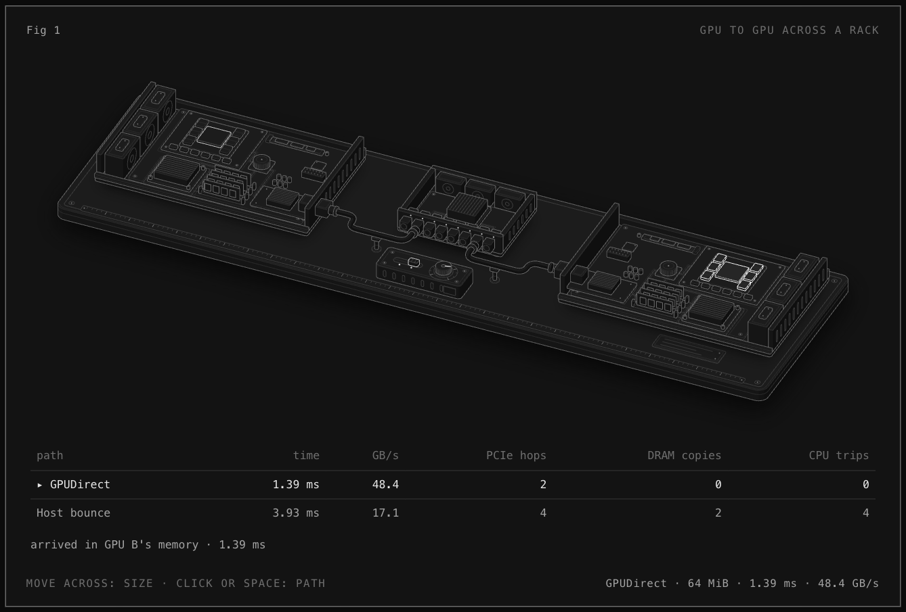
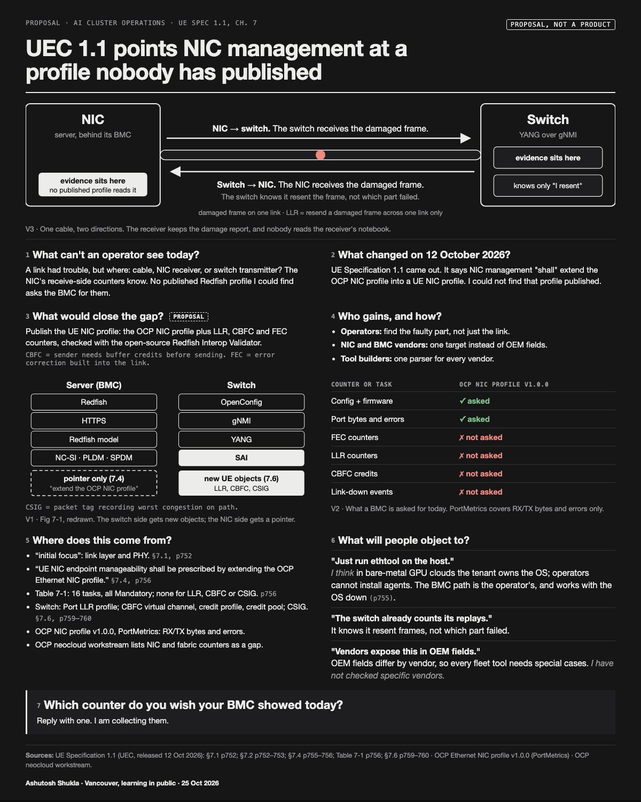

Product builder · Engineer by training · Vancouver, Canada
Then I go down the stack — from the operator's shift to the API, the cluster and the edge device — and build the decision layer that was missing. Under a constraint, every time.
Engineer at Cisco and Mavenir → product owner of a 1M-user platform → MBA → 0-to-1 at Vancouver Airport. Now applying the same loop to AI factories.
Since 2010 · Open to Senior / Staff PM and product-lead roles · Remote, hybrid or on-site in Canada
1 · The loop
Sense the signal nobody reads. Decide the trade-off. Build down the stack. Run it. Spread it through contracts, revenue and writing. Then learn and repeat. The binding limit sits in the middle. AI shows up as an amplifier in three of the builds, not as the identity.
2 · The map
Rows are the layers of a technology business. Columns are the five moves. Each dot is one piece of evidence: solid where he built or owned it, outlined where he decided, negotiated or researched it.
3 · The path
Not a job list. Each year shows which of the five moves had real evidence by then. Pick a year; the bars light up as capability accumulates.
4 · Cases
Every number carries its source: résumé, public proof you can open, or site only where the résumé doesn't repeat it.
5 · Hard calls
Technology is the easy part to list. These are the moments with two sides, a cost, and a decision someone had to own.
6 · Where the thinking is heading
Eleven layers from agents down to the edge. Each one is labelled honestly: built, adjacent, exploring or thesis.

Ultra Ethernet packet spraying vs one hashed path.

GPUDirect RDMA vs a bounce through host memory.

Why the BMC can't say which part of a link failed.
Three generations of switches, three config languages, no open fabric manager.
Decommissioned servers running quantised models where you can't ship a DGX.
We insure houses and cars, not the earning machine. Full briefs in the previous page.
7 · Proof
Live tools, code, models and essays. If a claim on this page has no link, it comes from the résumé.